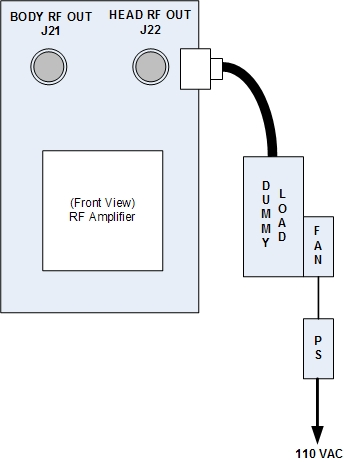

Remove Head RF Out cable from the service panel in the PGR cabinet / J22. Connect either 35 KW Dummy Load or 1.5T Dummy Load. If the 35 KW Dummy Load is used, the fan must be on. See Illustration 8.
Illustration 8: Setup for Head Output Measurement
